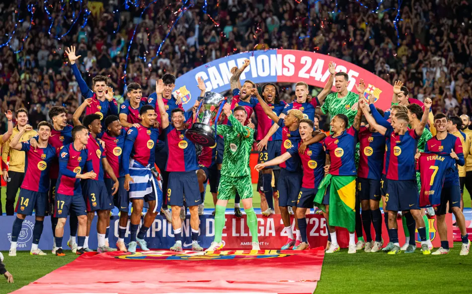

Barcelona conquista La Liga 2025/26 e volta ao topo do futebol espanhol
Equipe catalã confirma título após temporada dominante e encerra disputa intensa contra o Real Madrid.

O Barcelona é oficialmente campeão da La Liga 2025/26. Após uma temporada marcada por regularidade, intensidade ofensiva e grandes atuações coletivas, o clube catalão confirmou matematicamente a conquista do campeonato espanhol e voltou ao topo do futebol nacional.
A equipe comandada por Hansi Flick apresentou um dos ataques mais fortes da competição e conseguiu manter alto nível durante praticamente toda a temporada. Jogadores como Lamine Yamal, Pedri e Lewandowski tiveram papel decisivo na campanha que recolocou o Barça na liderança do futebol espanhol.

A disputa pelo título foi intensa até as últimas rodadas, principalmente contra o Real Madrid, que pressionou durante boa parte do campeonato. Mesmo assim, o Barcelona mostrou maior consistência defensiva e aproveitou melhor os confrontos decisivos para abrir vantagem na reta final.
Além do desempenho coletivo, o título também simboliza a consolidação da nova geração do clube. Jovens talentos formados em La Masia ganharam protagonismo durante a temporada e ajudaram a construir uma equipe mais rápida, técnica e agressiva ofensivamente.

A torcida blaugrana lotou as ruas de Barcelona para celebrar mais uma conquista nacional. O clube encerra a temporada doméstica em alta e agora volta suas atenções para o cenário europeu, onde busca transformar o crescimento recente em títulos continentais nos próximos anos.
Com o título da La Liga, o Barcelona reafirma sua força no futebol espanhol e demonstra que a reconstrução iniciada nas últimas temporadas começa a dar resultados concretos dentro de campo.